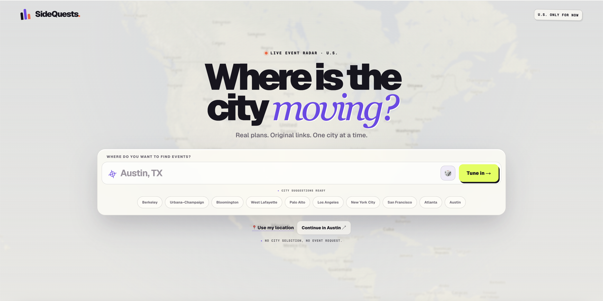
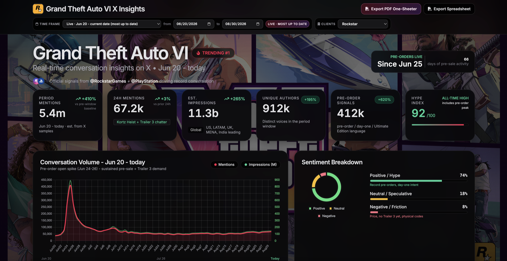

My Projects
A collection of projects I've built and contributed to

SideQuests
SideQuests is a city-focused live event radar for college students and young adults. It's an interactive map that shows you what's actually happening around you right now: concerts, campus events, nightlife, cultural happenings, and the spontaneous stuff you'd otherwise hear about a day too late. I'm building it because finding something to do on a Friday shouldn't mean checking six apps and three group chats.
I own the product end to end — the vision, the design and feel of the experience, which event sources are worth trusting, and the constant testing that refines how it all comes together. I use Codex to turn those decisions into a production-ready application: implementing features, researching and verifying event data, fixing technical issues, and shipping improvements. It's let me go from an ambitious idea to a polished, working product while keeping the creative direction and every final call in my hands.
xAI Dashboards
During my internship at xAI, I built a suite of internal conversation-intelligence dashboards for the sales organization using Grok Build. They track live activity on X around major titles, launches, trailers, updates, and cultural moments as they unfold.
Each dashboard pulls conversation volume, impressions, unique authors, sentiment, hype, and trend movement into a single view using the X API, surfacing high-impact posts and top topics so the team can see what's driving attention and how the conversation is shifting. The part I cared most about was the layer on top: turning those raw signals into concrete recommendations on content, creators, regional opportunities, messaging, and campaign strategy.
That shift is the whole point. It moves the team from reporting on what already happened to advising clients on what to do next, supporting sales conversations, campaign planning, and executive reporting by showing exactly where audience momentum is building and how X can help brands act on it.

AI-Powered Math Assistant
Python • Machine Learning • NLP • Desktop Application
An intelligent math assistant that revolutionizes the way students study. This AI-powered application reads your handwritten or typed notes and provides contextual explanations, generates personalized quizzes, and creates comprehensive summaries to enhance your learning experience. Built as a desktop application with overlay functionality, it seamlessly integrates with any application on your computer, allowing you to get help without switching contexts. The project leverages advanced machine learning models and natural language processing to understand mathematical concepts and provide accurate, helpful assistance in real-time.
Personal Portfolio Website
HTML • CSS • JavaScript • GitHub Pages
A modern, responsive portfolio website built from scratch using HTML, CSS, and JavaScript. Hosted on GitHub Pages, this project showcases clean design principles and user experience best practices. The website features a mobile-responsive layout, smooth animations, and an intuitive navigation structure. Developed using VS Code with version control through Git, this project demonstrates proficiency in front-end web development, deployment workflows, and modern web standards.
Venture Capital Research
Finance Analysis • Market Research • Investment Strategy
Researched and analyzed 50+ venture capital firms to identify potential lead and co-investors for a $MM+ Series C round. Evaluated investor fit based on portfolio composition, check size, and historical investment portfolio. Conducted fundamental research on the AI sector by analyzing investment and portfolio activity across Venture Capital, Private Equity, and Investment firms. Developed comprehensive investor profiles and outreach materials for executive leadership.